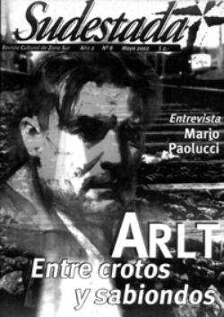

Buscar
Roberto Artl, la jactancia del dolor
Donde empieza el autor y termina el personaje, Roberto Arlt reflejó como nadie los traumas de la pobreza y la humillación y, de paso, transformó para siempre la historia de la literatura argentina con su estilo salvaje y violento.
Edición N° 8
Mayo 2002
Revista bimensual
Comprar edición impresaSumario
- Roberto Artl, la jactancia del dolor
- La cultura en tiempos de vacas flacas
- Osvaldo Bayer en Lomas: "Nunca hay que jubilarse de la lucha"
- Dos trenes, un país
Compartir Articulo
"Este cañón puede matar, este cañón puede destruir. Y la convicción de haber creado un peligro obediente y mortal me enajenaba de alegría". De esta manera, atormentada y feliz, Silvio Astier entra definitivamente al mundo del crimen en El juguete rabioso, obra maestra del, hasta entonces, joven y desconocido escritor Roberto Godofredo Christophersen Arlt. A partir de esta entrada, de esta irrupción violenta y descarada, la literatura argentina ya no volvería a ser la misma; y nadie quedaría al margen de la influencia de este enigmático personaje que escribió como vivió, que recorrió los sótanos de una ciudad sucia y oscura para encontrar allí su mundo.
En cada paso, en cada línea, Arlt fue forjando su cañón, y lo disparó sin piedad. Y en cada disparo estaba el dolor del rechazo, la voz del solitario que escribe como un salvaje porque vive como tal. También estaba el escritor que nació para ser vendido en los tranvías y que jamás fue aceptado por una élite de intelectuales formales y pacatos a los que atacó con ferocidad. Entonces, la frontera que separa al hombre de sus personajes se hizo cada vez más delgada, por momentos confundiendo realidad con ficción, y hoy ya no podemos saber si el que habla es Arlt, es Astier o es Erdosain.
"Soy el mejor escritor de mi generación, y el más desgraciado. Por eso tal vez soy el mejor", reconocía en una de sus Aguafuertes porteñas para explicar cómo ese mundo de locos, artistas y criminales no sólo se hallaba en sus libros, sino que también se desarrollaba en su mente, en su alma y en su corazón.
Erdosain, espejo del dolor
En una carta de 1930 a su hermana Lila, Arlt comienza a cruzar la frontera entre sí mismo y su personaje más contradictorio, Remo Erdosain: "Pensá que yo puedo ser Erdosain, pensá que ese dolor no se inventa, ni tampoco es literatura". ¿Qué era entonces aquel dolor? ¿Locura?, ¿genialidad?, ¿fraude? Lo cierto es que Arlt fue despreciado por todo el ambiente intelectual como escritor y como pensador. Por eso, no es casual que a Erdosain le pase lo mismo en Los siete locos, que sea rechazado por el hogar paterno, por su familia política y hasta por su mujer. El despecho es un tema que surge constantemente en la obra arltiana, y su respuesta es el crimen y la marginación, cuando no la humillación. Además, a este mundo narrativo y temático sólo se accede por medio del cuerpo, de la experiencia, en un peregrinar lento por las profundidades a las que no cualquiera puede descender. Arlt estuvo allí, desesperado e incomprendido, atacado por su propia ansiedad que lo mantenía al borde del colapso (conocida era su costumbre de dormir vestido, para poder salir de inmediato si es que su intuición o su insomnio lo empujaban a las calles). Y en ese estado de cosas nació su escritura, su estilo, que no era más que su temática, su relato desordenado de aquellas visiones nocturnas que no respetaban formalidades ni reglas, ya que se sentía empujado a escribir de otro modo, de una manera dolorosamente original. Así, cualquier maestra de grado es capaz de corregir una página de Arlt (ya sea la gramática, la sintaxis o sus tan nombradas faltas ortográficas) pero nadie, absolutamente nadie, es capaz de escribirla, tal como reflexionaba el escritor Ricardo Piglia. "Los solitarios hablan raro" confesaba Arlt, y otra vez no sabemos a quién atribuirle la frase, porque seguramente no tiene un autor determinado, y fue dicha para definir varias vidas, que por superpuestas no dejaron de ser nunca individuales.
El fraude, el robo y la decepción constituyen las preocupaciones temáticas más importantes de Arlt, porque hasta él mismo puede llegar a ser un fraude, un robo o una decepción. No por casualidad el escritor uruguayo Juan Carlos Onetti, al analizar la obra y la vida del gran Roberto, declaraba provocativamente que no sabía si el autor de El juguete rabioso era "un ser angelical, un farsante o un verdadero hijo de puta". Y tal vez fuera cualquiera de las tres definiciones, o ninguna de ellas, pero lo cierto es que detrás de esa coraza hecha de dolor, de esa imagen creada por él mismo para fomentar el mito, estaba el escritor genial, el intelectual comprometido, el crítico reflexivo. Parece ser que el propio Arlt se sentía más cómodo mostrándose como la fábula del inventor analfabeto, el mito del bárbaro, y para lograrlo esparció sobre su vida algunas incógnitas y pequeñas mentiras que alimentaron la fantasía. Por eso, su nacimiento nunca estuvo claro, por eso siempre dijo que lo echaron en tercer grado de la escuela cuando en realidad terminó la primaria con notas regularmente buenas y una conducta normal, por eso le gustaba decir que lo sacaron de la Escuela de Mecánica de la Armada "por inútil" y nunca admitió que fue él quien renunció cansado de la rigurosa disciplina de los militares. De todas esas falsedades se construyó el mito, se creyó estar frente a un coloso de la soberbia y la arrogancia y no ante un hombre atormentado por su pasado de humillación y su presente de soledad.
Una de las tantas marcas que se trajo de su infancia fue esa forma particular que tenía su padre de castigarlo.
"Mañana a la mañana te fajo", gruñía su padre ante una conducta del niño Arlt que lo disgustara. La noche anterior al castigo se le hacía eterna. Roberto de pibe, humillado y temeroso, no quería que saliera el sol. "No hay peor castigo que el que va a venir", escribió después en Los siete locos, como si Erdosain fuese su verdadero espejo.
Arlt, entre Florida y Boedo
Su relación con los literatos de su época no fue ni siquiera cordial, todo lo contrario, siempre estuvo signada por el desencuentro y la crítica. Nunca se sintió dentro de ninguna de las cofradías del momento, y si tuvo un acercamiento con alguno de los grupos fue, entre otras cosas, por la necesidad de publicar Los siete locos. Por afinidad política estuvo más ligado al grupo de Boedo, pero sus conviciones cercanas al anarquismo terminaron por alejarlo. No sólo su jactancia era detestada por los demás escritores, sino su forma de vivir, capaz de prescindir en todo momento del resto de los mortales, lo que no era soportable en los círculos intelectuales. Sin hipocresías ni medias tintas, sus opiniones nunca pasaron inadvertidas, sobre todo cuando hablaba de sus colegas: "Mallea escribe para maestras solteronas de más de cincuenta años; la admiración rimbombante de Gálvez hacía el Partenón y otros cachibaches griegos aburrió a mucha gente. Y es que eso sonaba a falso y a bombo" (otro buen ejemplo se puede encontrar en una de sus Aguafuertes porteñas, Yo y los literatos).
Para Arlt la literatura no era el refugio de sus penurias, sino su corporización, una necesidad. El autor de Los siete locos llevó su obra como una carga más, de la cual no confiaba demasiado. "No conozco un tipo que sea feliz leyendo" comentaba en un reportaje publicado en los años '30. "No se ha dado usted cuenta todavía de que si la gente lee es porque espera encontrar la verdad en los libros. Y esa verdad es relativa... esa verdad es tan chiquita... que es necesario leer muchos libros para aprender a despreciarlos". Por años la obra de Arlt fue subestimada, condenada al olvido o la indiferencia, tanto por el público como por los intelectuales. En estos días, cuando su nombre aparece en los programas de carreras universitarias y su obra es devorada por los ojos de miles de estudiantes, tampoco se lo reconoce en su totalidad y hasta se lo vacía de contenido con intentos de encasillar su obra a alguna de las tendencias literarias hegemónicas en su momento. Pero el estilo de Arlt era nuevo y, sobre todo, era muy diferente al resto.
El ladrón de libros
Como curiosa paradoja del destino, la publicación de su primer novela, El juguete rabioso, coincidió con la aparición del primer libro de Jorge Luis Borges, Historia universal de la infamia. Borges y Arlt, como dos extremos. En ese momento, un joven y humilde Borges reconoció que El juguete rabioso fue la mejor novela del año, aunque mucho tiempo después se ufanaría de no haber leído nunca la obra de Arlt. Borges y Arlt, tan diferentes. Uno creciendo en la tranquilidad y el confort de una familia acomodada, con el privilegio de disfrutar de una biblioteca cuantiosa al alcance de la mano. Otro, alternando sus primeros pasos en un universo pobre y limitado, donde los libros apenas si eran el botín de alguna arriesgada aventura en casas ajenas, como después lo relataría a través de sus personajes. Una biblioteca propia de libros robados o prestados, que viene a ser casi lo mismo.
A diferencia del autor de El Aleph, el trabajo de Arlt interesó a los lectores desde el principio. La gran repercusión que generó El juguete rabioso excedió las expectativas de la propia editorial, que lanzó la novela dentro de una modesta colección de folletines destinada a la venta popular en tranvías. A partir de ese momento, los caminos entre Arlt y Borges se bifurcaron, literaria y hasta políticamente, aunque los dos marcaron a fuego los márgenes del arco temático y narrativo de las letras argentinas. Injustamente, desde una mirada academicista Arlt se convirtió en el escritor bárbaro, inculto, analfabeto, que por un extraño milagro del destino fue capaz de crear el mundo marginal de Los siete locos, y por largos años se debatió más acerca de sus faltas de ortografía y sus problemas de sintaxis que sobre el contenido de sus particulares textos. Muchos autores como Julio Cortázar apoyan la tesis del escritor que escribe mal (en el prólogo de las Obras completas Cortázar contrapone la formación del joven Arlt con la suya: "¿Qué leíamos Borges y yo a los catorce años?", se pregunta).
Otros, en cambio, tratan de refutar la supuesta incultura del autor de Los lanzallamas, como Abelardo Castillo quien asegura que las primeras páginas de El juguete rabioso "son de alguien que ha ojeado algo más que Rocambole. Allí está Baudelaire, Fenimore Cooper, La historia de Francia de Guizot, Darwin y Hesíodo, la tragedia griega".
El paisaje de las nubes
Un lluvioso 26 de julio del '42 el corazón de Arlt dejó de latir para siempre, y a partir de ese momento se borró definitivamente la frontera entre el autor y sus personajes, hasta esa escena final, el ataúd saliendo grotescamente por la ventana de la pensión en Belgrano, parecía representar una síntesis perfecta de su obra, de su vida. Grotesca, salvaje, violenta, como esa escena, el ataúd llevando los restos del corpulento escritor hacia el cementerio, dejando su huella, para siempre. La huella de sus libros, que generaron durante décadas las más variadas polémicas, debates entre intelectuales, discusiones de cátedra y de café matizadas con bebidas de otro tipo.
Discusiones que, por otra parte, muy poco le hubieran interesado al propio Roberto Arlt. Ahí andaría el escritor, recorriendo los bares, comiendo a lo bestia con todo el cuerpo, escuchando de refilón las charlas entre colegas. Y seguro, segurísimo, ante alguna pregunta medio académica que le hicieran llegar desde otra mesa se tiraría el flequillo para atrás, apoyaría toda su humanidad sobre la silla, y pronunciaría con un dejo de indiferencia y cansancio su rabiosa sentencia: "Rajá, turrito, rajá".
(La nota completa en la edición gráfica de Sudestada N°08)
Comentarios
Diego Lanese, Ignacio Portela
Articulos más vistos


LIBRERÍA SUDESTADA

Colección infantil

Distribuidora de Libros

Suscripción

Sudestada en URUGUAY

Otros articulos de esta edición
Dos trenes, un país
La dura realidad argentina reflejada en la crónica diaria del Tren Blanco de cartoneros de José León Suárez hasta Capital ...
Osvaldo Bayer en Lomas: "Nunca hay que jubilarse de la lucha"
En la Casa de la Unidad y Resistencia Popular de Lomas, el autor de La Patagonia rebelde debatió sobre historia ...